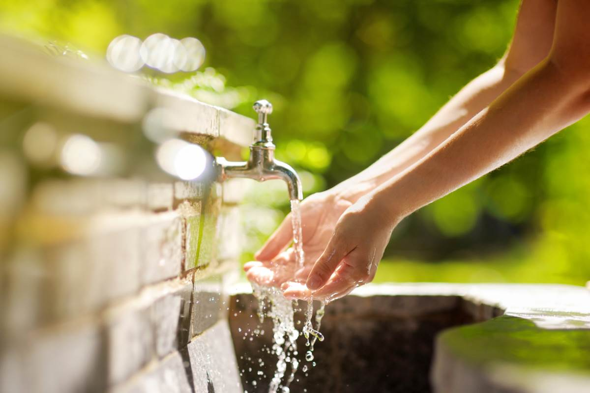

Clean Water, Brighter Futures
Every community deserves reliable, safe water. KM Kits Africa builds local capacity by delivering essential kits, training, and sustainable projects that create long-term impact.

A real story of clean water access
In one village, locally built filtration systems helped families replace contaminated drinking sources with safe water they could trust every day.
Why KM Kits Africa
We combine local know-how with durable support systems so communities can build clean water access, hygiene education, and better futures on their own terms.
Recent Projects
Get Involved
Volunteer, donate, or partner with KM Kits Africa to support service projects in communities that need them most.
Whether you want to donate supplies, join a community training team, or sponsor a local water system, your support helps the next project get built faster.